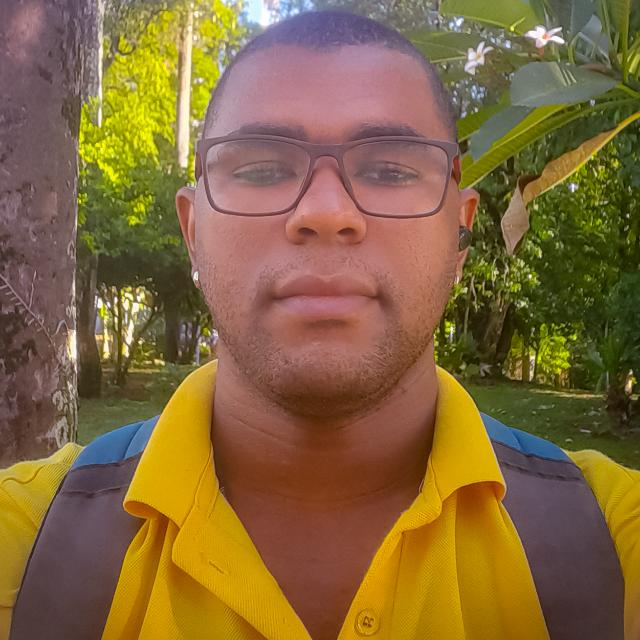

Quem sou eu?
Click na seta e conheça sobre mim
Sobre Mim
Sou um estudante Quilombola de Biblioteconomia e Documentação na Universidade Federal da Bahia. Durante o curso, tenho tido contato com muitas informações novas para mim. Ao descobrir a possibilidade de me tornar um desenvolvedor web, comecei a estudar tecnologias como HTML5, CSS e JavaScript. Espero poder desenvolver soluções tecnológicas para o campo cultural. Tenho experiência na área do audiovisual como produtor e assistente de som, tendo trabalhado em diversos projetos. Além disso, atuei na coordenação de equipes e na promoção de atividades relacionadas às artes e cultura. Essa experiência me proporcionou uma visão abrangente e um profundo entendimento do poder transformador que a cultura pode ter em nossa sociedade.
Em destaque, coordenei a produção do livro 'Retratos do Parguaçu', um projeto que busca retratar a vida e as obras de 20 artistas visuais da cidade histórica de Cachoeira/BA, isso reforçou ainda mais minha convicção sobre o poder da cultura como agente de transformação social.
Na área de desenvolvimento web, sou focado em construir sites e aplicações web. Possuo conhecimentos sólidos e formações em Desenvolvimento Web pela Mais1Code e Alura. Meu objetivo é unir minha paixão pela cultura com minhas habilidades técnicas para criar soluções inovadoras e impactantes.
Sou apaixonado por aprender e estou sempre em busca de novos conhecimentos e desafios. Acredito que o desenvolvimento pessoal e profissional é uma jornada contínua e estou sempre disposto a me aprimorar.
Neste site, compartilho minhas experiências, projetos e conhecimentos nas áreas de produção cultural, audiovisual e desenvolvimento web. Espero poder inspirar e contribuir para a comunidade através das minhas publicações e projetos.